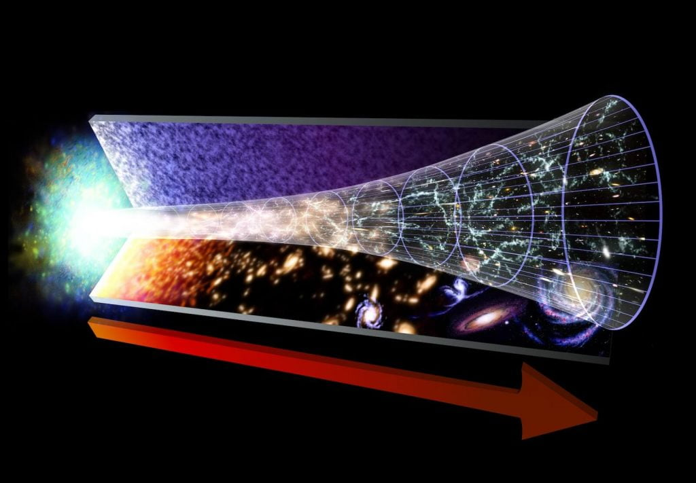

ဒါဆို မေးစရာ တစ်ခု ရှိလာပါတယ်။ ဒီ မဟာ ပေါက်ကွဲမှု ဘစ်ဘန် မတိုင်မီက ဘာရှိခဲ့ သလဲ။
ဒီ မေးခွန်းကို အတိုချုပ် ဖြေရရင်တော့ ဘယ်သူမှ မသိပါဘူး ဆိုတာပါပဲ။ ဒါပေမယ့် ဒီ မဟာ ပေါက်ကွဲမှုကြီး မတိုင်မီက ဘာတွေ ဖြစ်ခဲ့လဲ ဆိုတဲ့ မှန်းဆချက်တွေကတော့ သိပ္ပံ ပညာရှင်တွေ အကြားမှာ အဆိုပြု ထားကြတာတွေ ရှိပါတယ်။ ဒီဆောင်းပါးမှာ ဒီ အဆိုပြု ထားချက်တွေကို စုစည်း တင်ပြပေးလိုက်ပါတယ်။
အစ ပထမဦး
ပထမဆုံး မဟာ ပေါက်ကွဲမှုကြီး မတိုင်မီ ဘာရှိခဲ့လဲ ဆိုတဲ့ မေးခွန်းရဲ့ အဖြေကို မလေ့လာမီ မဟာ ပေါက်ကွဲမှုကြီး (Big Bang) ဆိုတာ ဘာလဲ ဆိုတာကို အရင် ရှင်းအောင် လုပ်ဖို့ လိုပါတယ်။ ဘာလို့ဆို ဒီ မဟာပေါက်ကွဲမှုနဲ့ ပါတ်သက်လို့ အတော်များများက သေချာ မသိကြပဲ အယူအဆ လွဲနေ ကြလို့ပါ။Big Bang မဟာ ပေါက်ကွဲမှုကြီး လို့ ပြောလိုက်ရင် လူအများစုက အဏုမြူ မှုန်ထက်တောင် သေးတဲ့ အမှတ် သေးသေးလေး ကနေပြီး စကြာဝဠာကြီး တစ်ခုလုံး အဖြစ်ကို ပေါက်ကွဲ ထွက်လာတယ်လို့ မြင်ကြပါတယ်။ Youtube က ဗီဒီယိုတွေ ကြည့်ရင်လဲ ဒီလိုပဲ ပြောကြပါတယ်။ ဒါပေမယ့် ဒီယူဆချက်က လုံးဝ ဥသုံ မှန်ကန်မှု မရှိပါဘူး။
“Big Bang မဟာ ပေါက်ကွဲမှု ကြီးဟာ အချိန်ကာလရဲ့ မှတ်တိုင် တစ်ခုသာ ဖြစ်ပြီး ဟင်းလင်းပြင် မှာရှိတဲ့ အမှတ် တစ်ခု မဟုတ်ပါဘူး” လို့ ကာလီဖိုးနီးယား နည်းပညာ တက္ကသိုလ်က သီအိုရီ ရူပဗေဒ ပညာရှင် ရှောန် ကာရိုးလ် (Sean Carroll) က ရှင်းပြပါတယ်။ သူဟာ ရောင်းအကောင်းဆုံး စာအုပ် တစ်အုပ်ဖြစ်တဲ့ “The Big Picture: On the Origins of Life, Meaning and the Universe Itself” စာအုပ်ကို ရေးသား ပြုစု ခဲ့သူလဲ ဖြစ်ပါတယ်။
မဟာ ပေါက်ကွဲမှုနဲ့ ပါတ်သက်လို့ သိပ္ပံ ပညာရှင်တွေ သေခြာ သိထားတာ ကတော့ ဒီကာလက စကြာဝဠာဟာ အလွန် အင်မတန် သိပ်သည်းပါတယ်။ ပြီးတော့ အလွန် တိုတောင်းတဲ့ အချိန် ကာလတိုလေး အတွင်းမှာ ရုတ်တရက် သိပ်သည်းမှု လျော့ကျ သွားပါတယ်။
ဒီကာလက စကြာဝဠာဟာ ဘယ်အရွယ်အစားပဲ ရှိခဲ့ ရှိခဲ့ ဒီစကြာဝဠာရဲ့ အပြင်ဖက်မှာ ဘာမှ မရှိပါဘူး။ ပြောရရင် အပြင် ဆိုတာကို မရှိခဲ့ တာပါ။ ဘာ့ကြောင့်ဆို စကြာဝဠာ ဆိုတာ အကုန်ပါတဲ့ အဝန်းအဝိုင်း တစ်ခုမို့ မြင်အပ် တွေ့အပ်၊ မမြင်အပ် မတွေ့အပ် အရာအားလုံးဟာ ဒီ စကြာဝဠာ ထဲမှာ အကြုံးဝင်နေလို့ပါ။
စိတ်ကူး ထဲမှာတော့ တန်ခိုးရှင် တစ်ပါးလို စကြာဝဠာရဲ့ အပြင်ဖက်က ရပ်ပြီး စကြာဝဠာကြီးကို ဖန်တီးနေတာ၊ အပြင်က ကြည့်နေတာမျိုး စိတ်ကူးနိုင်ပေမယ့် လက်တွေ့မှာတော့ မဖြစ်နိုင်ပါဘူး။ ဘာလို့ဆို စကြာဝဠာရဲ့ အပြင်ဆိုတာ မရှိလို့ပါ။ စကြာဝဠာက အာကာသ ဟင်းလင်းပြင် ထဲကို ပြန့်သွားတာ မဟုတ်ပဲ ဟင်းလင်းပြင် ကိုယ်နှိုက်က ပြန့်ကား ကြီးထွား လာတာ မို့လို့ပါ။
အခုနေ သင်ဘယ်နေရာမှာပဲ ရောက်နေ ရောက်နေ လွန်ခဲ့တဲ့ နှစ် သန်း ၁၄,၀၀၀ လောက်က အခုနေရာကို ပြန်ကြည့်မယ် ဆိုရင် သင်မြင်ရမှာက အလွန် ပူ၊ အလွန် သိပ်သည်းဆ များပြီး အလွန်မြန်တဲ့ နှုန်းနဲ့ ပြန့်ကား နေတဲ့ စကြာဝဠာ ကြီးကို မြင်တွေ့ကြရမှာ ဖြစ်ပါတယ်။
တကယ်တော့ ဘယ် သိပ္ပံ ပညာရှင်မှ ဒီ မဟာပေါက်ကွဲမှုကြီး ဘယ်လို စဖြစ်တယ် ဆိုတာကို မသိကြပါဘူး။ ဒီလိုပဲ မဟာ ပေါက်ကွဲမှုကြီး အပြီး တစ်စက္ကန့် ကာလ မပြည့်မီ ဘာတွေ ဖြစ်ခဲ့လဲ ဆိုတာလဲ ဘယ်သူမှ သေချာ မသိကြပါဘူး။
မဟာ ပေါက်ကွဲ မှုကြီး ဖြစ်အပြီး တစ်စက္ကန့်လောက် အကြာမှာတော့ အပူချိန် အနည်းငယ် ကျဆင်းလာတာမို့ ဒီအချိန်မှာ ပထမဆုံးသော ပရိုတွန် တွေနဲ့ နျူထရွန်တွေ စတင် ဖြစ်ပေါ် လာပါတယ်။ သိပ္ပံ ပညာရှင် အများစု ကတော့ ဒီ ပထမ တစ်စက္ကန့် အတွင်းမှာ စကြာဝဠာကြီးဟာ အလွန် လျင်မြန်တဲ့ နှုန်းနဲ့ ပြန့်ထွက် သွားခဲ့တယ်လို့ ယုံကြည်ပါတယ်။ ဒါမှလဲ စကြာဝဠာ အနှံ့ ဒြပ်ဝတ္ထုတွေ ညီညီညာညာ ပြန့်နှံ့သွားမှာ ဖြစ်ပါတယ်။ (ဒီလို ညီညီ ညာညာ မဖြစ်ရင် စကြာဝဠာထဲမှာ ဂလက်ဆီတွေက တစ်နေရာ သွားစုပြီး ကျန်တဲ့ နေရာအားလုံးက ဟာလာ ဟင်းလင်း ဖြစ်နေမှာပေါ့။)
ဒါဆို မဟာပေါက်ကွဲမှုကြီး မတိုင်မီ ကရော
Big Bang မဟာ ပေါက်ကွဲမှုကြီး မတိုင်မီက စကြာဝဠာ ရဲ့ အရွယ်အစားနဲ့ ပုံသဏ္ဍာန်ဟာ ဘယ်လို ရှိမလဲ ဆိုတာ ဘယ်သူမှ မသိပါဘူး။ ဖြစ်နိုင်ခြေ ရှိတာ တခုကတော့ အဲ့သည်အချိန်က စကြာဝဠာဟာ အလွန်ပူ၊ အလွန် သိပ်သည်းဆ များပေမယ့် တည်ငြိမ်နေတဲ့ အခြေအနေ တခု အနေနဲ့ တည်ရှိနေ ခဲ့တာလဲ ဖြစ်နိုင်ပါတယ်။ ဒါပေမယ့် တချိန်ချိန် အကြောင်း တစ်ခုခုကြောင့် ဒီ တည်ငြိမ်မှု ပျက်ပြားပြီး မဟာ ပေါက်ကွဲမှုကြီး ဖြစ်လာတာ ဖြစ်နိုင်ပါတယ်။ဒီ အချိန်က တည်ရှိခဲ့တဲ့ မဟာ ပေါက်ကွဲမှု အကြို စကြာဝဠာဟာ ဒီလို အခြေအနေ မျိုးသာဆိုရင် ဒီ စကြာဝဠာကို အဓိက လွှမ်းမိုးထားမယ့် ရူပဗေဒ နိယာမ ကတော့ ကွမ်တမ် ရူပဗေဒ နိယာမ တွေပဲ ဖြစ်ပါတယ်။ ကွမ်တမ် ရူပဗေဒ ဆိုတာက အလွန် သေးငယ်တဲ့ မှုန်လေးတွေရဲ့ သဘာဝနဲ့ ပါတ်သက်တဲ့ ရူပဗေဒ နိယာမ ဖြစ်ပါတယ်။ မဟာ ပေါက်ကွဲမှုကြီး ဖြစ်လာပြီးတဲ့နောက် ဒီ ကွမ်တမ် စကြာဝဠာ ကို သမားရိုးကျ ရူပဗေဒ (Classical Physics) နိယာမ တွေက လွှမ်းမိုးသွားတာလို့ ပြောလို့ ရပါတယ်။
ရူပဗေဒ ပညာရှင်ကြီး စတီဗင် ဟော့ကင်း အတွက်ကတော့ ဒီ အပြောင်းအလဲလေးက အရေးအပါဆုံး ဖြစ်ပါတယ်။ မဟာ ပေါက်ကွဲမှုကြီး မတိုင်မီက ဖြစ်တဲ့ အဖြစ်အပျက်တွေကို တိုင်းတာနိုင်စွမ်း မရှိပါဘူး။ ဒီလို တိုင်းတာနိုင်စွမ်း မရှိလို့ အဓိပ္ပါယ် ဖွင့်ဆိုဖို့လဲမဖြစ်နိုင်ပါဘူး။ဟော့ကင်းရဲ့ စကားနဲ့ ပြောရရင် “Undefined” လို့ ဆိုပါတယ်။
ဒီ အယူအဆကို ဟော့ကင်းက နယ်စည်းမဲ့ အဆိုပြုချက် (No-boundary proposal) လို့ အမည်ပေးထားပါတယ်။ သူ့အဆိုအရ အချိန် နဲ့ ဟင်းလင်းပြင် တွေဟာ အကန့်အသတ် ရှိနေပါတယ်။ ဒါပေမယ့် သူတို့မှာ အဆုံး အစ တော့ မရှိပါဘူး။ ဒါက ဘာနဲ့ တူလဲ ဆိုတော့ ကျွန်တော်တို့ ကမ္ဘာကြီးဟာ အရွယ်အစား အားဖြင့် အကန့်အသတ် ရှိနေပေမယ့် အဆုံး အစတော့ ရှိမနေတဲ့ သဘောနဲ့ တူပါတယ်။
“မဟာ ပေါက်ကွဲမှု မတိုင်ခင်က အဖြစ်အပျက် တွေရဲ့ အကျိုးဆက်ကြောင့် မဟာ ပေါက်ကွဲမှု ပြီး ကာလအပေါ်မှာ တွေ့မြင်နိုင်တဲ့ လွှမ်းမိုးမှု တစုံတရာ မရှိပါဘူး။ အဲ့သည်တော့ အဲ့ မတိုင်မီက အဖြစ်အပျက်တွေ အချိန်တွေ အားလုံးကို သံယောဇဉ် ဖြတ်ထားခဲ့ပြီး အချိန်ဟာ မဟာပေါက်ကွဲမှုက စတယ်လို့ ပြောလို့ ရတာပေါ့” လို့ National Geographic ရဲ့ အင်တာဗျူး တစ်ခုမှာ ဟော့ကင်းက ပြောခဲ့ပါတယ်။

ဒီလို အတိတ်ကို ရောက်လေ ပယမ်းပတာ ဖြစ်မှု ပိုများလာလေ ဆိုတာ တနည်းအားဖြင့် အချိန်ရဲ့ စီးဆင်းမှု ပြောင်းပြန် ဖြစ်နေတာနဲ့ အတူတူ ပါပဲ။ အဲ့သည် စကြာဝဠာမှာ ဆိုရင် အချိန်က ကျွန်တော်တို့နဲ့ ပြောင်းပြန် စီးဆင်း နေတာမို့ ကျွန်တော်တို့ စကြာဝဠာဟာ သူတို့ အတွက်တော့ အတိတ် ဖြစ်နေပါလိမ့်မယ်။
ဒီ အတိတ် စကြာဝဠာမှာ အချိန်ကသာ ပြောင်းပြန် စီးဆင်းတာ မဟုတ်ပါဘူးတဲ့။ ကျွန်တော်တို့ စကြာဝဠာရဲ့ အခြားသော အရည်အသွေး တွေ အားလုံးကလဲ ပြောင်းပြန် ဖြစ်နေလိမ့်မယ်လို့ ဆိုပါတယ်။ ဥပမာ အလွယ်ဆုံး ပေးရရင် ကျွန်တော်တို့ စကြာဝဠာက ဘယ်ဖက်ကို သူတို့က ညာဖက်လို့ မြင်ပါလိမ့်မယ်တဲ့။
နောက် သီအိုရီ တစ်ခုက ဘာပြောလဲ ဆိုတော့ မဟာ ပေါက်ကွဲမှုဟာ စကြာဝဠာကြီး ကျုံ့ဝင် နေရာကနေ ရုတ်တရက် ပြန်ပြီး ပြန့်ကား ထွက်လာတဲ့ ကြားကာလ အကူးအပြောင်း ဖြစ်တယ်လို့ ဆိုပါတယ်။ ဒါကို “Big Bounce” ပြန်လည် ရုန်းကန်ခြင်း လို့လဲ လူသိများကြပါတယ်။ ဒီ သီအိုရီ အရတော့ စကြာဝဠာကြီးဟာ ပြန့်ကားလာလိုက် တခါ ပြန်ကျုံ့သွားလိုက်နဲ့ မဟာ ပေါက်ကွဲမှုပေါင်း မြောက်များစွာ ဖြစ်ပြီး သံသရာ လည်နေမယ်လို့ ဆိုပါတယ်။ ဒါပေမယ့် ဘယ်လိုနည်းနဲ့ ပြန့်ကားနေရာက ရပ်သွားပြီး ပြန်ကျုံ့သွား မလဲ ဆိုတာကိုတော့ အဖြေပေးနိုင်ခြင်း မရှိကြပါဘူး။
နောက် စိတ်ဝင်စားစရာ သီအိုရီ တစ်ခုကတော့ ကျွန်တော်တို့ရဲ့ စကြာဝဠာဟာ ဒီ့ထက် ကြီးတဲ့ မိခင် စကြာဝဠာထဲက ပြုတ်ထွက်လာတဲ့ အစိတ်အပိုင်းလေး တစ်ခုဖြစ်တယ်လို့ ဆိုပါတယ်။ ဒါက ဘာနဲ့ တူလဲ ဆိုတော့ ရေဒီယို သတ္တိကြွ ဒြပ်စင်တွေ ပြိုကွဲတဲ့ အခါ အယ်လ်ဖာ နဲ့ ဘီတာ အမှုန်တွေ ထွက်လာတာနဲ့ ခပ်ဆင်ဆင် တူပါတယ်။ မိခင် စကြာဝဠာ ကြီးကလဲ ဒီပုံစံ ခပ်ဆင်ဆင် စကြာဝဠာ အငယ်လေးတွေ ပုံမှန် လွင့်ထွက် လာနေမယ်လို့ ဒီ သီအိုရီက ဆိုပါတယ်။ ဒီလို ထွက်လာတဲ့ စကြာဝဠာ လေးတွေဟာ တစ်ခုနဲ့ တစ်ခုဆို အပြိုင် စကြာဝဠာ တွေပဲ ဖြစ်ကြပါတယ်။ ဒီစကြာဝဠာ တွေဟာ တစ်ခုနဲ့ တစ်ခု သီးခြားစီ ရှိနေပြီး တစ်ခုနဲ့ တစ်ခု ဘာမှ လွှမ်းမိုးခြင်း၊ အပြန်အလှန် သက်ရောက်ခြင်း တစ်ခုမှ မရှိကြပါဘူး။
အခု ပြောပြခဲ့တဲ့ မဟာပေါက်ကွဲမှု အကြိုကာလနဲ့ ပါတ်သက်တဲ့ အယူအဆ တွေဟာ စိတ်ကူးယဉ် ဆန်တယ်လို့ ထင်ကောင်း ထင်နိုင်ပါတယ်။ ဒါပေမယ့် တကယ့် လက်တွေ့မှာလဲ စိတ်ကူးယဉ် အဆင့်ပဲ ဖြစ်နေပါ သေးတယ်။ ဘာ့ကြောင့်ဆို သိပ္ပံ ပညာရှင် တွေအနေနဲ့ မဟာပေါက်ကွဲမှုရဲ့ အကြို ကာလကို ဘယ်လိုမှ ကြည့်မြင်ဖို့၊ လေ့လာဖို့၊ ထောက်လှမ်း ရှာဖွေဖို့ ဘယ်လိုမှ မဖြစ်နိုင်လို့ပါ။
ဒါ့ကြောင့် စတီဗင် ဟော့ကင်း ပြောသလိုပဲ ဘယ်လိုမှ မသိနိုင် မမြင်နိုင် သလို ဒီဖက် စကြာဝဠာ ပေါ်ကိုလဲ ဘာမှ အကျိုးသက်ရောက်ခြင်း မရှိတဲ့ အတွက် မဟာပေါက်ကွဲမှု မတိုင်မီ ဟိုဖက်ခြမ်းကို သံယောစဉ် ဖြတ် မေ့ပစ်လိုက်ပြီး အချိန်ကို မဟာ ပေါက်ကွဲမှုက စတင်တာက အသင့်တော် ဆုံး ဖြစ်ပါကြောင်းပါ။
Reference: What happened before the Big Bang? | Live Science